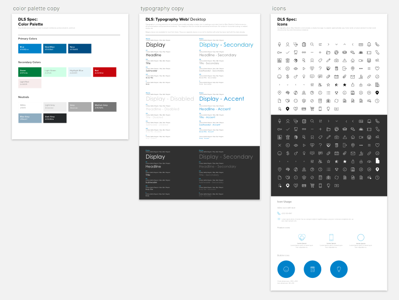
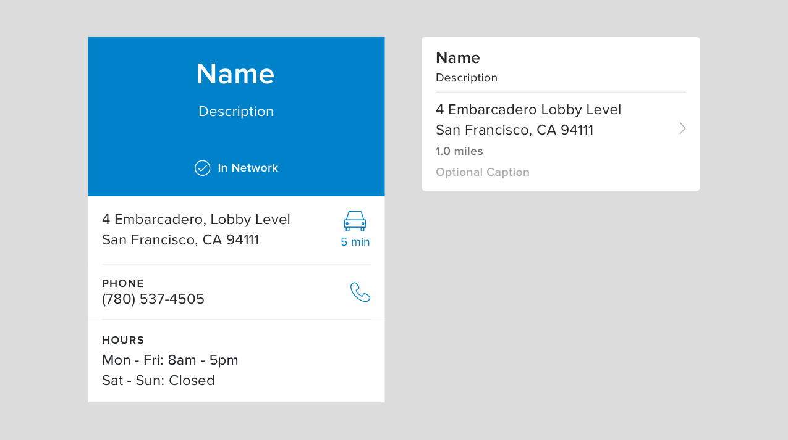
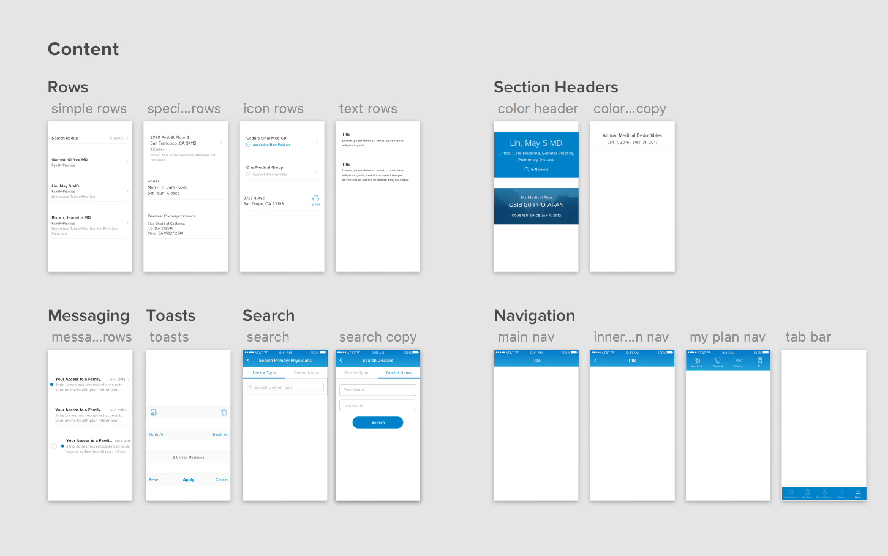

Product Design Intern, Jun - Aug 2017
This past summer, I worked at Blue Shield as a product design intern on the Customer Experience team. It was an incredible learning opportunity being a part of a team that has begun to define design's role within Blue Shield. I worked on two main projects - the Claims and Benefits experience redesign and creating our Design Language System.
Visual language is incredibly important to products. It is extremely difficult for progress to occur if such a language isn't shared and understood by everyone using it. As a product grows, these problems can easily compound.
Design systems play a fundamental role in the development and scaling of successful products.
When I joined Blue Shield, it became clear that the company did not have a well-defined design language. I saw this as a great project opportunity and pitched it to my manager. As Blue Shield focuses more heavily on software solutions, the importance of a solidified design system becomes increasingly greater. I was excited to begin tackling this problem.
After a few weeks working with the small design team at Blue Shield, it became clear that we lacked a systematic way to guide our efforts when tackling projects.
Once we recognized these challenges, I begun to brainstorm and solidify the problems that this new design system would address:
Blue Shield's digital platform is built by various teams throughout California. This makes it difficult to create coherent experiences. With teams constantly developing new solutions and styles, it is hard to manage a consistent experience for all users.
Blue Shield is building digital products for multiple platforms and devices. Creating a coherent experience across all devices requires synchronous features and designs - something we lacked.
Healthcare solutions have yet to undergo major innovations. Solutions and designs created years ago still exist in many places which necessitate significant overhauls. Making such sweeping changes requires that we create a singular experience.
The overarching goal for the design system would be to create an accessible and beautiful design language. Through well defined, reusable components and assets, the system would help our team create a more efficient and effective design process.
I chose to reduce the initial scope of the project to Blue Shield's web platform because it was the platform the majority of BSC's members used (85% of members). After finishing those components, I quickly moved to our native Android and iOS apps.
I began by researching and consolidating our various designs throughout the website. Organizing the designs by use cases allowed me to see where and how experiences became disjointed. This process also helped me to understand the distinct treatment of each component in the context of different use cases. Then, I documented and prioritized which designs needed to be improved in order to create a coherent experience.
I chose this type of review before diving into the project for a few reasons. First, displaying disjointed designs and experiences side-by-side effectively conveyed to stakeholders the need for a design system. Second, this would ensure that all components were accounted for. Third, creating an inventory of current components/screens helped determine which components would easily be translated to a responsive screen size.
At the end of this 3-day review process, the team and I discussed my findings and established some guiding principles for the project:
Each component belongs to a larger whole in order to create a singular experience. There should be no outliers or isolated components.
Components should coexist but should also evolve independently of one another. The system should not be a set of static components and styles, but an evolving library.
It's important that all of our components are ADA compliant and simple to use for members of all ages and all levels of healthcare experience.
Designers should be able to easily think about Blue Shield's evolving design beliefs and constraints when creating new screens, interactions, and patterns.
Prior to starting the project, Blue Shield already had a web style guide (one that wasn't very comprehensive). This guide became the starting point for the design system. The guide allowed me to quickly synthesize colors, typography, and iconography - which was extremely useful in ensuring that the latter parts of the system were heading in a unified direction.
Inline with our guiding principle of clarity, I made sure to document all instances of these assets. It's important that other designers clearly understand when and where to use these assets for future projects. Providing rationales for each decision was a good exercise and allowed me to justify decisions to the rest of the design team.
Often, components in design systems are defined as atoms which make up larger molecules. The drawback of atomic design is that components will be used in a variety of ways - sometimes in unintended ways. This could worsen the already disjointed user experience on Blue Shield's platform.
Individual atoms seemed to contradict our guiding principle of cohesiveness so I chose to create components that coexisted with each other but could also evolve independently as design changes are made.
For example, our Find A Doctor avatars may be defined by an initial style guide but could be used in different ways on various devices. This makes it difficult to update components across our platforms. With the design system, we can now make changes to components like the ones below without worrying about breaking other screens.
Each component's properties (e.g. size, title, captions, etc.) are defined in Sketch and can quickly be used to create a prototype. To further speed up prototyping, we made many of the components dynamic to be used on various screen sizes.
We also chose to make the components layer groups rather than Sketch symbols in order for designers to resize components. With newer versions of Sketch, if a designer were to resize a symbol, all instances of the symbol would change, break screens and set back the team's work. With layer groups, designers can easily copy and paste components onto an artboard to quickly create a screen.
As I created components for web and mobile, I would periodically add them to a library. This would serve as the singular place for designers to go to grab components to quickly create screens/interactions.
As the library began to grow, organization became increasingly important - especially for mobile. I had to step back and decide the best way to structure/group these components to increase usability and accessibility. For web, I decided to group components based on their fundamental purpose (e.g. buttons, text fields, cards, etc.). For mobile, I took a slightly different approach. I grouped similar components and placed them into individual artboards. The artboards were then grouped into different categories such as content, navigation, onboarding, etc. Here are a few of the artboards below:
This organized structure made it easy to quickly find certain components and put together screens. Because properties like size, placement, and color are intrinsically defined for each component, designers could easily go into the library, select the components they wanted, and paste them onto an artboard, creating a screen in only a few minutes.
I tested the functionality of the design system with 2 head designers in my department. Within a few hours, they were able to put together 20+ screens and build a testable prototype!
At the end of my internship, I handed off the design library to the 2 head designers to be distributed to all designers throughout the company - a pretty cool result for a project on a short timeframe!